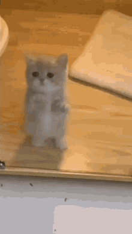

Interesting Facts About Cats
- Cats have been domesticated for thousands of years and were once worshipped as gods in ancient Egypt.
- Cats have retractable claws and are excellent hunters.
- Cats use their tails for balance and communication.
- A cat's sense of smell is 14 times stronger than a human's.
- Cats have a flexible spine and can rotate their ears 180 degrees.
- Cats have a grooming routine that helps keep their fur clean and free of tangles.